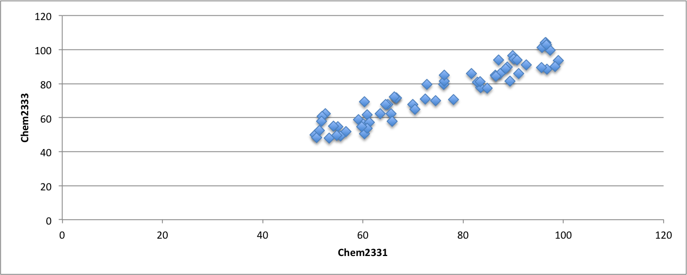
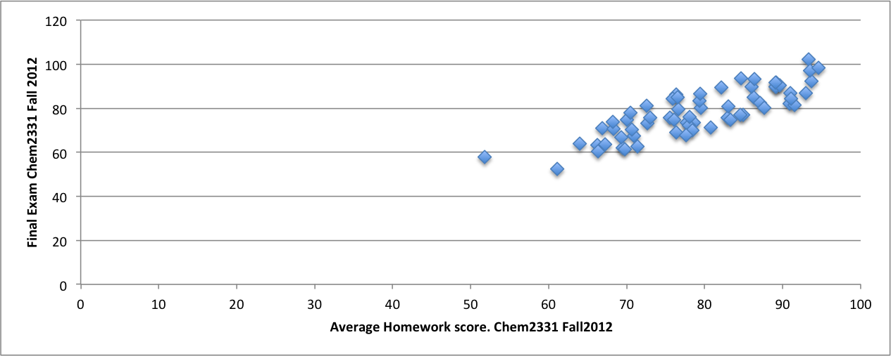
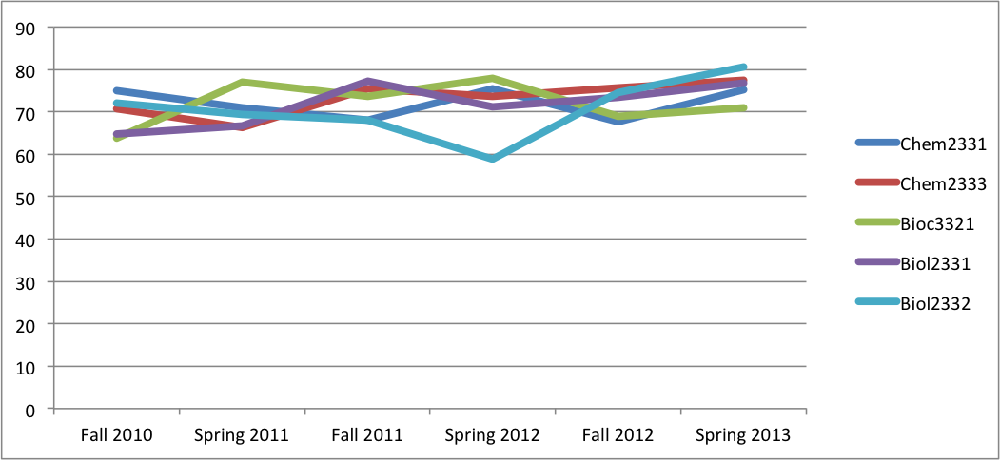
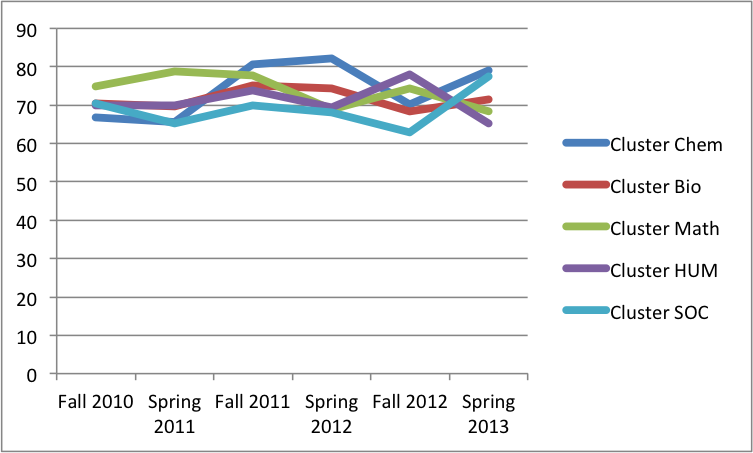
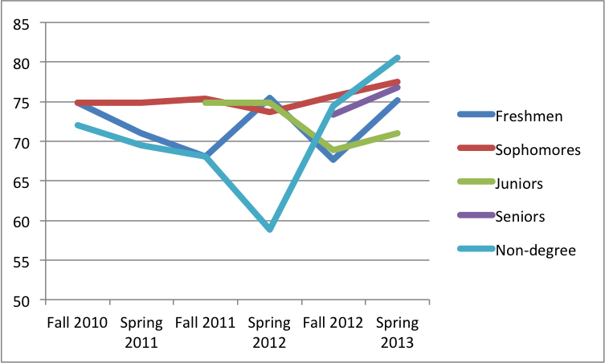

This is an old document that we wrote when trying to design bosco
Important:
- The plots shown here are all fake numbers taken from a random function in excel. Take a look here
- Any of the student data represented could be filtered based on categorical variables (gender, ethnicity, have taken a course...)
numerical (GPA, ACT, grade on a specific course or assignment
- This interface is designed to easily navigate and find interesting data.
It will not include many graphing tools nor statistical analysis that do not reveal extra information.
All data can be downloaded into csv form for further analysis and representation
We will use JSON data with a javascript database to easily navigate the so many different ways one can classify the data.
It will also be easy to allow users to upload their own data and/or interface it with iSEAL, Moodle...
Possible Representations:
- Course vs Course: matching students (paired samples).
- How do students perform in one course vs another?
Compare final grade vs final grade or a specific assignment from courseI to another assignment form courseII
Example 
- It cannot be the same course in different years because only the common students between the courses
will be represented.
BoSCO will find all students who took those two courses.
Potentially, it can merge different semesters when different students may have taken that same course at a different time
- It can represent a final grade of a course vs an assignment grade of that same course since the students are the same

- Course vs Time
- How final (averaged over students) grades (or final letter) evolve over time (by semesters)

- Select as many courses as you want: Merge courses in one single average (e.g. clusters) or represent them as different lines

- To find out how courses can be clustered based on similar grades go to the "Curriculum" section
- Students vs Time
- Average grades for all courses taken by Freshmen, Sophomores, Juniors...

- Average GPA (all courses) or a set of courses through time of one student, or filtered students

- Curriculum
- Course vs Course: similarity between two un-matched (unpaired) samples
- Robb's graphs from "R" were the Pearson correlation coefficient
Can it only be applied with "matched" samples, that is, it needs common students between courses?
- Covariance, Student's t-test, chi-squared test, PCA, clustering analysis...
if it has to be implemented we may need to choose which technique should be on BoSCO and which can be done elsewhere after downloading the data
- Sequence of courses that students choose: identify paths
Each student will have two kinds of variables:
- Measuring/Performance student variables:
These variables are associated to student's habilities: generally, except for surveys, the higher the better.
- Course grades: final numerical, letter, N/S, assignment grades (quizzes, papers...)
- GPA or average of cluster courses (computed on the fly or searchable)
- Student background - numerical: ACT scores
- Independent student variables:
- Student background - non numerical: gender, ethnicity, first generation...
- Student while at UMR: number of credits, year he/she is in
Each course will have the following variables associated to it:
- Semester-->clasroom where it was taught, number of students, instructors,
- Do we need? pre-req, number of credits
On tags and concepts:
- Course vs Course representations: For integration purposes:
- Automatic search (NLP) or pulling out tags:
When clicking on a course object (semester, assignment...modules? LOs?)
a series of tags will appear. When clicking on one of these a list of course object
that have the tag will show up.
- UMR learning outcomes will be listed: upon clicking one of them
a list of course objects that have the LOutcome will show up
- MCAT (other standard of topics) are listed and on clicking
a list of course objects that have the topic will show up
- The same can be applied on standard (agreed) tags regarding:
- Kinds of activities (group, preentation, writing)
- Cognitive level
- Math level
- For writing assignemnts: Literature's rubric
- For quantifying concepts/topics instead of assignments:
- Choose one category: (math level,cognitive level)" and see the grade